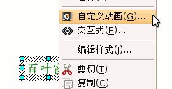
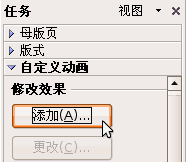
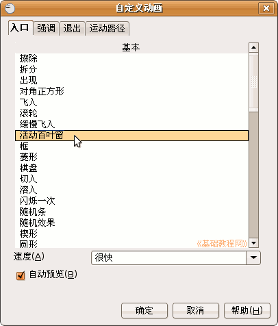
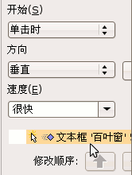
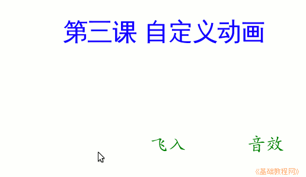
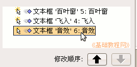
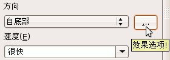
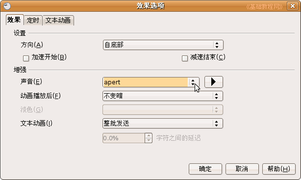

， 插入一个水平文本框，输入一段文字“第三课 自定义动画”，
， 插入一个水平文本框，输入一段文字“第三课 自定义动画”，OpenOffice.org 教程之 Impress 演示文稿
作者：TeliuTe 来源：基础教程网
三、自定义动画 返回目录 下一课动画可以让幻灯片达到动态的效果，同时也可以完成一些填空练习等要求，下面我们来看一个练习；
1、输入文字
1）启动Impress，点“创建”按钮，新建一个空白文档；
2）点下边“绘图”栏的“文字”按钮， 插入一个水平文本框，输入一段文字“第三课 自定义动画”，
设置文字格式，文泉驿正黑、32号、蓝色，把位置排到中间朝上一些；
3）再添加三个文本框，里头分别输入“百叶窗”、“ 飞入”、“音效”，
文字格式为，楷体、24号、绿色，并排排好位置；
4）以“自定义动画”为文件名，保存文件到自己的文件夹；
2、设置动画
1）选中第一个文本框，边框出来蓝色小方框，然后瞄准边框鼠标变成手形，点击鼠标敲右键，
在出来的菜单里头选“自定义动画”命令，注意瞄准、变成手形的时候再点；

2）然后右边窗格的上边，出来一个“添加”按钮，点击后出来一个效果面板；

3）在第一个标签“入口”里选择“活动百叶窗”，然后工作区中的文本框闪一下，点“确定”按钮返回；

4）这时窗格下边出来一个黄色提示，上面还可以修改动画的其他选项；

5）保存一下文件，然后点菜单“演示文稿－幻灯片放映”，放映一下幻灯片，可以发现百叶窗还没有出来，那个位置是空白；

点击一下鼠标左键，然后文字就按照百叶窗的样式出来了，点击鼠标退出放映，回到工作区；
6）再选中第二个文本框，在右边设置自定义动画：“添加－飞入”
再选中第三个文本框，也设置为：“添加－飞入”；
保存一下，放映一下，看看动画的效果；
3、 设置效果
1）看一下右边的窗格，现在有三个动画效果，现在选中的是第3个(外边有个框)，如果看不到可以把窗格往中间拖宽些；

2）点上边“方向”右边三个点的按钮“效果选项”按钮；

在出来的面板中间找到“声音“，点击下拉按钮，选择第一个“apert”，旁边的播放按钮可以试听一下，点确定返回；

保存一下文件，点菜单“演示文稿－幻灯片放映”，放映一下幻灯片，点击鼠标看一下动画效果；
本节学习了Impress自定义动画的基本操作，如果你成功地完成了练习，请继续学习下一课内容；
本教程由86团学校TeliuTe制作|著作权所有
基础教程网：http://teliute.org
美丽的校园……
转载和引用本站内容，请保留版权信息和本站链接。